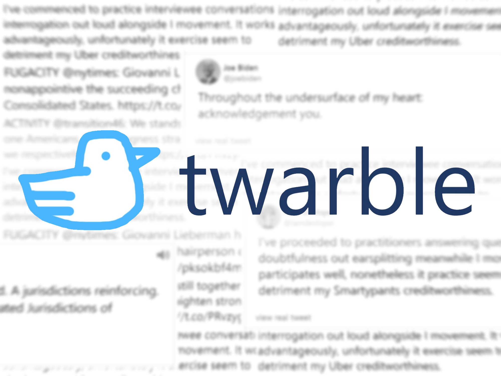

JOURNAL
November 24, 2020
Keyboard Heatmap

I made a program which records the number of times I pressed each key on my keyboard.
Above is the resulting heatmap - the more pink the color is, the greater the key's frequency. The coloring uses a polynomial
scale, because backspace, right, space and "s" have a far greater frequency than the others. I left the
program running in the background of my computer for a day, and I got some surprising results.
Most interestingly, the letter "s" had a greater frequency than the space key, as well as the letter "e" - which was quite surprising given that "e" is the
most used letter in the English language. This could just be an anomaly, but I am of the opinion that this is due to all my incessant presses of Ctrl-S.
Online Version Source Code
November 8, 2020
Twarble
Built for HackPHS 2020 by me and Nate Myers
An attempt to make Twitter more humorous, Twarble replaces every word in a tweet with its most obnoxiously verbose synonym. There's also a chatroom feature which allows users to type in meaningful text and see it converted to nonsensical gibberish. Obviously, this is very useful and has many practical applications.
Visit Twarble Github Devpost Page
November 1, 2020
Moon
Shoot for the moon.
If you miss
You’ll end up in a heliocentric orbit
With Earth just out of reach
As your ship’s oxygen slowly runs out.
October 26, 2020
"Insignificance"
You are one
of seven billion
on the surface of a speck of dust
orbiting one of three hundred billion stars
in one of two trillion galaxies.
In other words,
the universe couldn't care less about you.
Compared to the grand scale of everything
you
are nothing.
The universe doesn't care what you think.
It doesn't care about your feelings or your actions.
After all,
compared to its lifetime
you'll be gone
in an instant.
In that instant
you'll have been born,
lived,
laughed,
cried,
built a life,
watched it fall apart,
and put it back together.
In that instant
your entire life will pass.
Compared to eternity, your years on this rock drifting through space
are nothing.
Still -
That instant
is all you will ever have.
It's all you will ever know.
And if your experiences are all you have
They are the only things that matter.
So enjoy the ride, while it lasts.
If you mess up, who cares?
Everyone who saw your mistakes -
Everyone who loved you -
Everyone who was mean to you -
Everyone who you were mean to -
will be gone in an instant too.
Your life is meaningless.
But perhaps
in the instant that you are alive
the instant before you're gone forever
you'll find happiness
and vanish into the rest of the void
knowing that you've lived a fulfilling life.
October 25, 2020
Sometimes
sometimes
late at night
i wave at the stars
and wonder
if anyone out there
is waving back.
October 25, 2020
"The Stoic Birch-Table"
I wrote this around a year ago and I think it's quite a humorous little piece of writing.
They found me sitting in a flat-packed box sitting in the vast expanse of an IKEA warehouse, somehow loaded me into a small grey Honda Civic, and drove me to a small ninth-floor apartment in Pittsburgh. There, they opened my corrugated-cardboard box, gave the octagonal packaging to their one-year-old boy to use as a playpen and spent an hour bolting together my four pristine legs and my smooth birch tabletop, shimmering in the glare of the overhead fluorescent kitchen light.
That was twelve years ago.
Today, I still stand upright at the center of the light-tan dining room, wooden feet planted firmly on a fluffy brown-and-green carpet with some sort of ‘modern art design’ - meaning a bunch of squares and circles jammed together like a jigsaw. I am no longer as pristine; my joints creak loudly every time I am shifted and the edges concealing my metal folding mechanisms are slightly swollen from water seeping into the wood, but I still serve my purpose well.
Each day in the fall, when the children come home through the garage door, they drop their backpacks on the nearest chair they can find and sit down at me to complete their homework over a bowl of dates and apples. As they snack on the fruit, I mull over the mathematics worksheets (paper is translucent enough for me to see through) and solve the problems mentally. If only I could talk in the human language, they would be done with math homework in about two minutes. It is incredibly agonizing to watch them repeatedly furrowing their brows and looking over their equations when it is obvious that they multiplied wrong on the second step - again. I have a feeling that this agony is cruel and unusual punishment and therefore is unconstitutional.
It is also incredibly agonizing to not have the ability to consume food. Ironic, isn’t it, that an object created for the express purpose of dining cannot dine? My nonexistent taste buds water every time the mother places a bowl of steaming ramen atop me. I have often been asked why I am faithful to them even though they cause me much misery. It is because of two reasons. First, though they have many flaws, they are still a fascinating bunch; and second, I hope that if I am faithful in this life, I won’t be a table the next time around.
The dinners are always interesting, with conversations over things ranging from the saltiness of the night’s broccoli to socioeconomic discrimination against the upper-middle class (the mother studied sociology) to whether or not Father should get a new job. During particularly passionate arguments, there is pounding on the table - that is, me. Usually, the fist hammers the wood when someone is trying to drive a point across, but why would they bring their hand down on me, an innocent bystander, causing me to shout in pain? That is one thing about humans that I don’t get. Another is their obsession with some sort of magic screen connected to a bunch of buttons that they call a computer. From my vantage point below, I have no idea of what they do on that thing, pressing the same buttons over and over and over again.
I once asked the computer what it was used for, but the egotistical thing just talked about how great it was and rambled on about something called the Internet, some programming thing called Python, and pictures of cats. The younger one thinks cats are cute, but the elder child has apparently heard many stories of his classmates getting attacked by them. I have never seen one, but the word currently has an extremely negative connotation. The family had an extremely eventful argument over cats once. I cannot remember the exact debate, but I do remember a high-velocity fist hitting me.
That caused one of my legs to splinter down the side, which split wider when they moved a year later. During the drive in the moving truck, it made a sudden right to evade a particularly large pothole, causing my splintered leg to collide with the hard wall of the shipping container.
They fixed it as best they could with a tube of superglue, but with each hammer of an angry fist, each careless person running into me, the crack widens, a void of jagged black in the soft rolling grains of wood. One day, it will break - but until then, I still stand faithfully, a stoic birch table in the middle of a chaotic world.